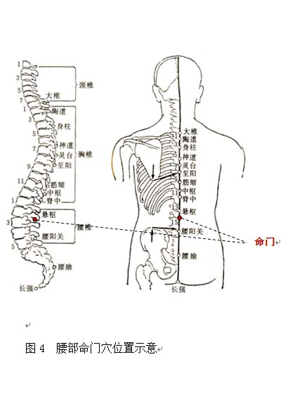

阳虚质调理方法
1. 调体专用产品
【名称】姜桂饮
【食用方法】每次1-2袋，以适量温开水冲调食用，每天2次。
2.情志调摄
宜保持积极向上的心态，正确对待生活中的不利事件，及时调节自己的消极情绪。
宜欣赏激昂、高亢、豪迈的音乐，如《黄河大合唱》等。
3.饮食调养
宜选用甘温补脾阳、温肾阳为主的食物，如羊肉、鸡肉、带鱼、黄鳝、虾、刀豆、韭菜、茴香、核桃、栗子、腰果、松子、红茶、生姜等。
少食生冷、苦寒、黏腻食物，如田螺、螃蟹、海带、紫菜、芹菜、苦瓜、冬瓜、西瓜、香蕉、柿子、甘蔗、梨、绿豆、蚕豆、绿茶、冷冻饮料等。即使在盛夏也不要过食寒凉之品。
参考食疗方：（1）当归生姜羊肉汤：当归、生具有温阳补血、祛寒止痛功效，适合阳虚体质者食用。
（2）韭菜炒胡桃仁：生胡桃仁、韭菜，具有温肾助阳功效，适合阳虚体质腰膝冷痛者。
4.起居调摄
居住环境以温和的暖色调为宜，不宜在阴暗、潮湿、寒冷的环境下长期工作和生活。平时要注意腰部、背部和下肢保暖。
白天保持一定活动量，避免打盹瞌睡。睡觉前尽量不要饮水，睡前将小便排净。
5.运动保健
宜在阳光充足的环境下适当进行舒缓柔和的户外活动，尽量避免在大风、大寒、大雪的环境中锻炼。
日光浴、空气浴是较好的强身壮阳之法。也可选择八段锦，在完成整套动作后将“五劳七伤往后瞧”和“两手攀足固肾腰”加做1～3遍。
6. 穴位保健
（1）选穴：关元、命门。
（2）定位：关元位于下腹部，前正中线上，当脐下3寸。命门位于腰部，当后正中线上,第2腰椎棘突下凹陷中（见图4）。
（3）操作：两穴均可采用温和灸，点燃艾条或借助温灸盒，对穴位进行温灸，每次10分钟。艾条温和灸点燃端要与皮肤保持2～3厘米的距离，不要烫伤皮肤，每周进行1次。关元穴还可采用掌根揉法，用掌根着力于穴位，做轻柔缓和的环旋活动，按揉每穴2～3分钟，每天1～2次。也可配合摩擦腰肾法温肾助阳，以手掌鱼际、掌根或拳背摩擦两侧腰骶部，每次操作约10分钟，以摩至皮肤温热为度，每天1次。
